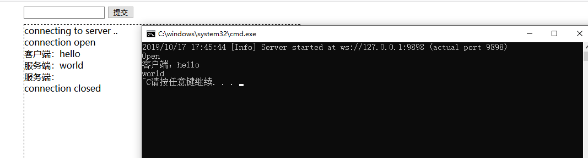

WebSocket 是 HTML5 开始提供的一种在单个 TCP 连接上进行全双工通讯的协议。
WebSocket 使得客户端和服务器之间的数据交换变得更加简单，允许服务端主动向客户端推送数据。在 WebSocket API 中，浏览器和服务器只需要完成一次握手，两者之间就直接可以创建持久性的连接，并进行双向数据传输。
在 WebSocket API 中，浏览器和服务器只需要做一个握手的动作，然后，浏览器和服务器之间就形成了一条快速通道。两者之间就直接可以数据互相传送。
今天在这里我会用C#搭建WebSocket服务端演示WebSocket的通信过程
一、WebSocket中的事件、属性和方法
属性：
Socket.readyState 只读属性 readyState 表示连接状态，可以是以下值：
0 - 表示连接尚未建立。
1 - 表示连接已建立，可以进行通信。
2 - 表示连接正在进行关闭。
3 - 表示连接已经关闭或者连接不能打开。
Socket.bufferedAmount 只读属性 bufferedAmount 已被 send() 放入正在队列中等待传输，但是还没有发出的 UTF-8 文本字节数事件：
事件 事件处理程序 描述
open Socket.onopen 连接建立时触发
message Socket.onmessage 客户端接收服务端数据时触发
error Socket.onerror 通信发生错误时触发
close Socket.onclose 连接关闭时触发 方法:
Socket.send() 使用连接发送数据
Socket.close() 关闭连接二、有了大概的了解接下来就开始实现这么一个实例
1.客户端
<!DOCTYPE html>
<html>
<head>
<meta charset="utf-8" />
<title></title>
</head>
<body >
<div style="margin-left: 650px;">
<form id="Form">
<input type="input" name="" id="SendInfo" value="" />
<button type="submit">提交</button>
</form>
<div id="hello" style="border: dashed 1px black;height: 500px;width: 500px;margin-top: 10px;">
</div>
</div>
</body>
<script type="text/javascript">
var test=function(){
var print=document.getElementById('hello');
var form = document.getElementById('Form');
var input = document.getElementById('SendInfo');
print.innerHTML += "connecting to server ..<br/>";
window.ws = new WebSocket('ws://localhost:9898/'); //监听webscoket服务端口
//监听消息状态
ws.onmessage=function(eve){
print.innerHTML+=eve.data+'<br/>'
}
//监听链接状态
ws.onopen=function(){
print.innerHTML+='connection open <br/>'
}
//监听关闭状态
ws.onclose = function () {
print.innerHTML += 'connection closed<br/>';
}
//向服务器端发送消息
form.addEventListener('submit',function(e){
e.preventDefault();
var val="客户端："+input.value;
ws.send(val);
input.value="";
})
}
window.onload=test();
</script>
</html>
2.服务端创建一个C#控制台程序
using Fleck;
using System;
using System.Collections.Generic;
using System.Linq;
using System.Text;
using System.Threading.Tasks;
namespace WebScoket
{
class Program
{
static void Main(string[] args)
{
var allScokets = new List<IWebSocketConnection>();
var server = new WebSocketServer("ws://127.0.0.1:9898"); //创建webscoket服务端实例
server.Start(scoket=> {
scoket.OnOpen = () =>
{
Console.WriteLine("Open");
allScokets.Add(scoket);
};
scoket.OnClose = () =>
{
Console.WriteLine("Close");
allScokets.Remove(scoket);
};
scoket.OnMessage =message => {
Console.WriteLine(message);
allScokets.ToList().ForEach(s=>s.Send(message));
};
});
var input = Console.ReadLine();
while (input != "exit")
{
foreach (var socket in allScokets.ToList())
{
socket.Send("服务端："+input);
}
input = Console.ReadLine();
}
}
}
}
3.运行效果
